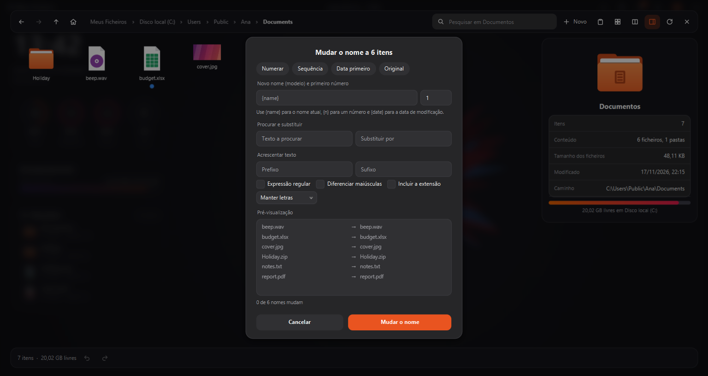
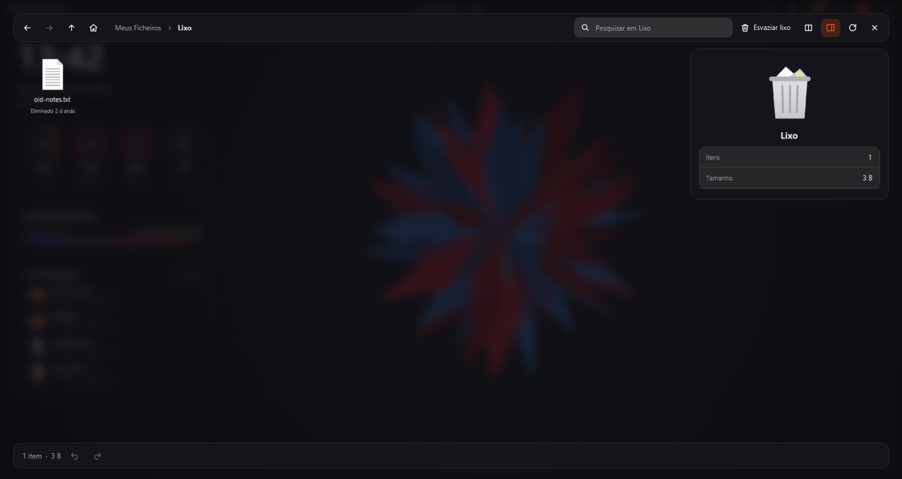

Trabalhar com ficheiros
Copiar, cortar e colar#
Selecione os itens, carregue em Ctrl+C (copiar) ou Ctrl+X (cortar), vá até ao destino e carregue em Ctrl+V. A área de transferência é a do sistema: pode copiar no FileExp e colar noutro gestor de ficheiros, e vice-versa.
O FileExp nunca substitui um ficheiro de surpresa. Se o nome já existir, o novo item recebe um nome livre como report - Copy.pdf ou foto (2).jpg.
As cópias grandes passam pelo painel de transferências com progresso, velocidade, tempo restante e Cancelar.
Nova pasta e novo documento#
Novo › Pasta (Ctrl+Shift+N) ou Novo › Documento de texto. O novo item fica selecionado com o nome pronto a editar.
Mudar o nome#
Selecione um item e carregue em F2. Alterar apenas maiúsculas e minúsculas ("photo.jpg" → "Photo.JPG") também funciona no Windows.
O FileExp verifica o nome antes de o mudar: nomes vazios, caracteres como \ / : * ? " < > | no Windows, nomes terminados em ponto ou espaço e nomes reservados (CON, NUL…) são recusados com uma mensagem clara.
Mudar o nome a vários itens de uma vez#
Selecione vários itens e carregue em F2.

| Opção | Exemplo |
|---|---|
| Modelo | Holiday {n} → Holiday 1, Holiday 2… (Holiday 01, Holiday 02… com 10 ou mais itens) · {date} {name} → 2026-11-17 report |
| Procurar e substituir | Texto simples ou uma expressão regular, diferenciando ou não maiúsculas |
| Prefixo e sufixo | Texto acrescentado antes ou depois do nome |
| Letras | Manter letras, minúsculas, MAIÚSCULAS ou Iniciais Maiúsculas |
| Incluir a extensão | Desligado por predefinição, para que .jpg continue .jpg |
{name} é o nome atual, {n} um número, preenchido com zeros até à largura do maior (o primeiro número escolhe-se ao lado do modelo) e {date} a data de modificação do ficheiro.
A pré-visualização atualiza-se à medida que escreve e mostra os conflitos a vermelho (nome repetido, já existe, inválido). A mudança de nome é tudo ou nada: se um nome falhar, os que já foram mudados são repostos. Trocas como "a" → "b" e "b" → "a" funcionam.
Eliminar#
| Ação | Atalho | Resultado |
|---|---|---|
| Mover para o lixo | Delete | O item vai para o Lixo do FileExp e pode ser restaurado ou anulado. |
| Eliminar permanentemente | Shift+Delete | Removido de vez, depois de uma confirmação. |
O Lixo do FileExp funciona da mesma forma no Windows, Linux e macOS. Abra-o a partir da barra superior ou de Meus Ficheiros para restaurar itens para onde estavam, eliminar para sempre ou esvaziar o Lixo.

Pode pedir ao FileExp que não peça confirmação antes de mover para o Lixo em Definições › Ficheiros.
Anular e refazer#
Ctrl+Z anula e Ctrl+Y (ou Ctrl+Shift+Z) refaz. A barra de estado e o menu do fundo da pasta mostram o nome da operação, por exemplo "Anular: Mudar o nome a 6 itens".
Anular abrange: mudar o nome (também a vários de uma vez), mover para o Lixo, colar, mover, Enviar para, nova pasta, novo documento, comprimir, extrair, mover para o outro painel e as movimentações feitas por automações. São guardadas as últimas 50 operações.
Anular nunca elimina nada de vez. O que tem de desaparecer (uma cópia, uma pasta nova) vai para o Lixo, e refazer trá-lo de volta.
Comprimir e extrair#
- Comprimir (barra de ações ou clique com o botão direito) cria um ZIP da seleção.
- Extrair aqui e Extrair para... num ZIP. Um ZIP com uma única pasta lá dentro é extraído sem criar "Pasta/Pasta".
- A extração está protegida contra zip slip: um ZIP não pode escrever fora da pasta escolhida.
Enviar para#
Clique com o botão direito › Enviar para lista:
- as pastas do sistema e Escolher uma pasta...;
- dispositivos externos (pens USB, cartões de memória, discos externos);
- a nuvem: pastas sincronizadas (OneDrive, Google Drive, Dropbox…) e contas WebDAV ligadas;
- Computadores próximos, quando Partilhar por perto está ligado.
Transferir da internet#
Novo › Transferir da internet... pede um endereço e transfere o ficheiro para a pasta atual através do painel de transferências.
Favoritos#
Clique com o botão direito › Adicionar aos Favoritos (ou a estrela na barra de ações). Os favoritos aparecem primeiro na Visão geral.